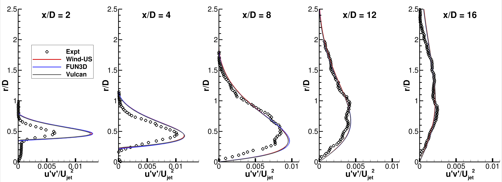

Public Access (formerly Langley Research Center)Turbulence Modeling Resource |
Return to: Off-Design Mach 1.63 Axisymmetric Jet Intro Page
Return to: Turbulence Modeling Resource Home Page
Off-Design Mach 1.63 Axisymmetric Jet Case
SST-Vm Model Results
Link to SST-Vm equations

Note that thorough
grid studies were not always performed for validation cases such as this one.
Some effort was made to ensure reasonable grid resolutions, but there may still be
small noticeable discretization errors. Therefore, these validation results shown should be considered
representative, but not "truth."
The plots shown compare the SST-Vm results from three independent
CFD codes: WIND-US, FUN3D, and Vulcan, along with experimental data.
FUN3D used freestream turbulence intensity=0.775% and freestream turbulent viscosity (relative to laminar)=0.009
(additional details can be found in the CFL3D User's Manual, Appendix H,
which uses the same default freestream turbulence settings).
WIND-US used freestream turbulence intensity=0.1317% and freestream turbulent viscosity (relative to laminar)=0.001.
Vulcan used freestream turbulence intensity=0.1% and freestream turbulent viscosity (relative to laminar)=0.01.
Please read note 5 on Notes on running CFD page.
These results are from the finest posted grid (401x281; 201x161; 961x481).
All three codes gave nearly identical results to each other.
Notes:
(1) For axisymmetric cases such as this (with singular axis of symmetry), it is important to
solve the turbulence dissipation terms in a strong conservation form;
(2) These are compressible code results run on a supersonic case. There may be influence of compressibility.
Although they could be beneficial for this case, no specific turbulence model compressibility corrections have been employed here.
In compressible flow problems, the energy equation contains extra terms from the time-averaging process that are typically
ignored in incompressible or low Mach number situations. These terms are the molecular diffusion and turbulent transport of turbulent kinetic energy.
The derivation of these terms, using Favre averaging, is described in detail on the page
Implementing Turbulence Models into the Compressible RANS Equations, and also in Wilcox, D. C.,
"Turbulence Modeling for CFD," 2006, DCW Industries, La Canada, CA. For the jet flow problems considered here, these
contributions remain small. The total energy has a contribution from turbulent
kinetic energy, k, which may not be significant for subsonic flows and where the turbulent transport of heat is not a
focus of the analysis. For these heated jet flows, k is a non-trivial component of the overall energy. The default
solution procedures for two of the codes used to obtain results here (and used typically for lower speed flow analyses),
FUN3D and Wind-US, do not consider the contribution of k in the total energy expression. (It is noted that an alternate
formulation available in FUN3D intended for high Mach number applications does have this capability.) The default
procedure in Vulcan does consider contribution of k in the total energy expression. Examining the centerline
comparisons first, it may be observed that the centerline mean velocities and k show very close agreement with each other,
regardless of treatment of k in the total energy equation. The centerline static temperature comparisons, however, show
a significant effect of this treatment. The default solution procedure of the three codes, shown by solid lines,
shows close agreement between FUN3D and Wind-US, but not Vulcan. When we take this Vulcan solution and as simple
post-processing step add k back into the total energy (which is essentially the same as never having subtracted out
k from E when processing T, thus yielding a result that ignores the contribution of k in E),
we arrive at centerline temperatures that are in close agreement with the two other codes; this is shown
by the dashed black line, denoted as "Vulcan w/o k in E".
The net change in calculated static temperature at every point in the flow = k*(gamma-1)/R.
Further comparisons of profiles at several axial stations exhibit the same trends. The mean velocity, turbulent kinetic
energy (k), and turbulent shear stress of the three codes are very similar. The static temperatures using the default
procedures, however, differ depending on how the result from Vulcan is treated. The default solutions from the three codes
yield profiles in the first temperature profile plots (with all solid lines), which show Vulcan differing from
FUN3D and Wind-US. The second temperature profiles plot, with the Vulcan solution essentially ignoring the contribution of k
in E (shown with a dashed line and denoted as "Vulcan w/o k in E") results in very close agreement with solutions
from the other two codes.
The key result exhibited by these jet results is that ignoring the contribution of turbulent kinetic energy in the
total energy variable may not be an accurate assumption for flows at Mach numbers higher than unity, and especially
where the turbulent transport of heat is important to the analysis. A similar result is evident for the
Heated Mach 1.63 Axisymmetric Jet Case - SST-Vm model results.
The data files from experiment and all three codes are given here.
For all centerline data except temperature:
For temperature centerline data:
For all profile data except temperature
(here each file contains all results for a particular x/D location):
For temperature profile data
(here each file contains all results for a particular x/D location):
Return to: Off-Design Mach 1.63 Axisymmetric Jet Intro Page Return to: Turbulence Modeling Resource Home Page
Recent significant updates:
A typical FUN3D input file is:
fun3d_SSJet_Shocks.nml.
Page Curators: Christopher Rumsey,
Ethan Vogel,
Clark Pederson
Last Updated: 09/06/2024